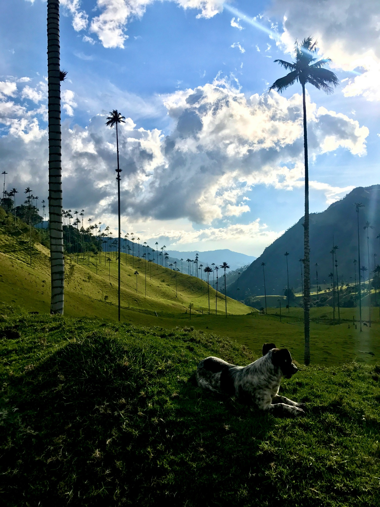
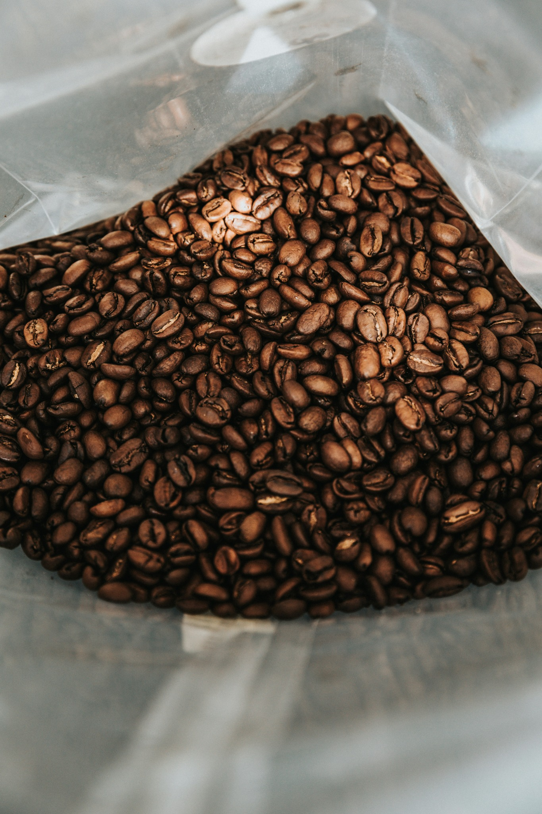
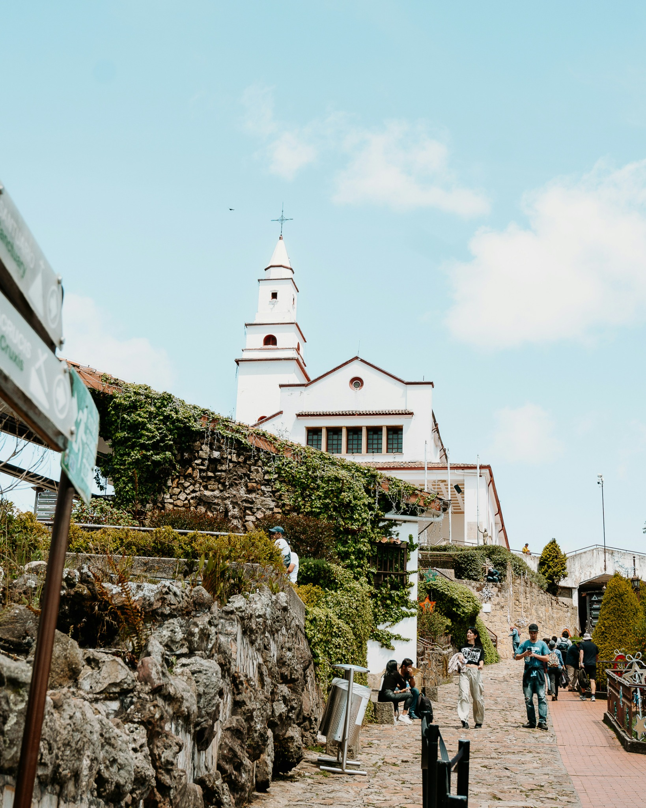
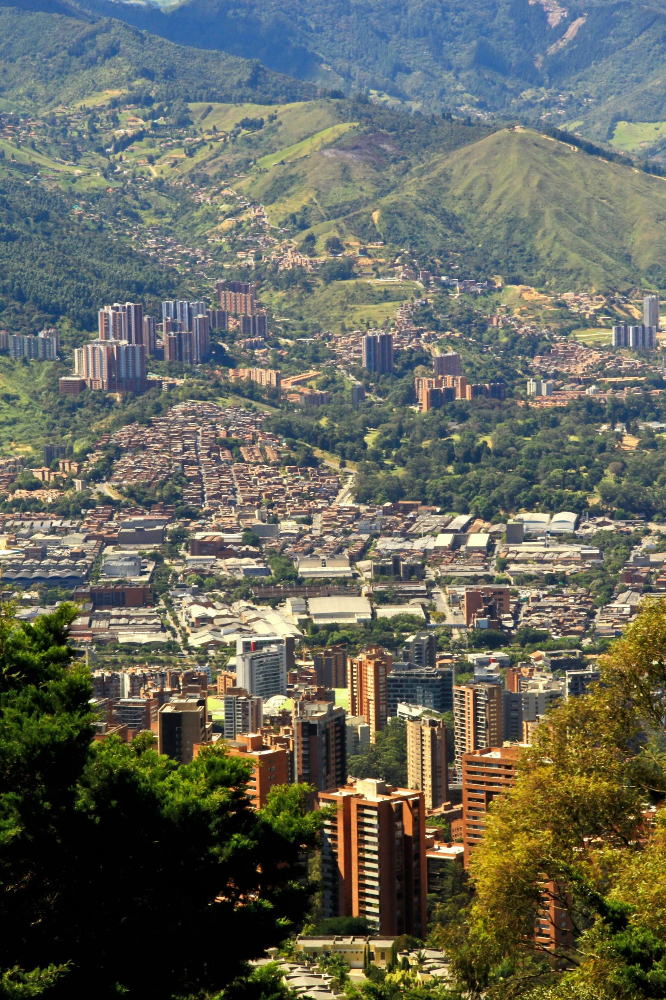
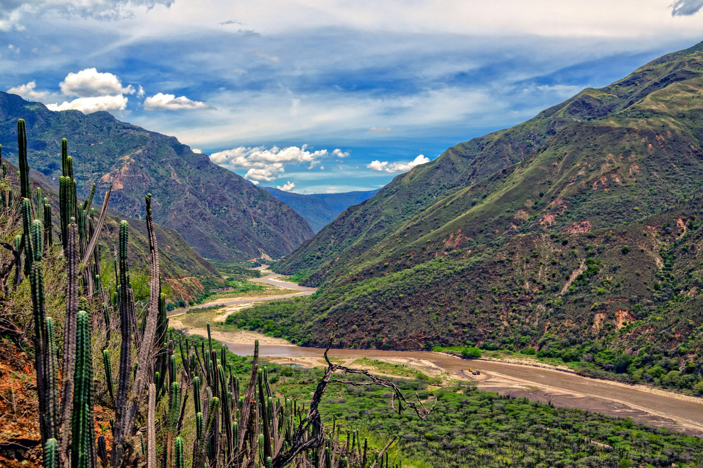

Voices in the Storm: Colombia’s Political Reality Today
Colombia’s political landscape is increasingly dynamic...
The Green Jewel of the Continent: Colombia’s Natural Beauty
With two oceans, the Amazon, deserts, snow-capped mountains...
Liquid Gold: Colombian Coffee Around the World
Colombian coffee is a symbol of national pride...
Bogotá
Colombia’s capital, Bogotá, is much more than just the political centre of the country...
Medellín
Medellín was once a city known worldwide for its violence...
Cali
Cali, the salsa capital, is undoubtedly one of the most cheerful cities...
Barranquilla

Barranquilla is the **Carnival capital**, and not just because it hosts one of the largest festivals in Colombia...
Bucaramanga
Bucaramanga is a city of contrasts, where the modern and the natural come together...